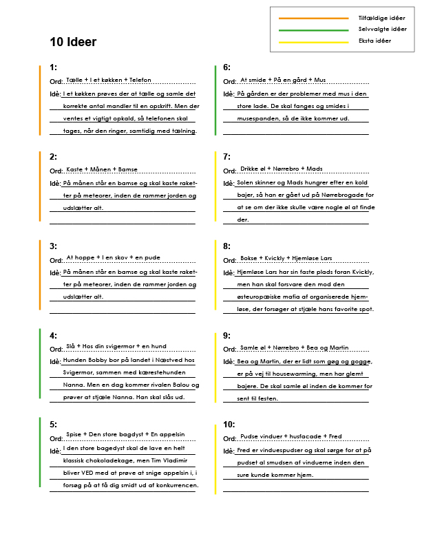

Tema 4 - Animation
Website med spil
Hvad gik opgaven ud på?
I denne opgave skulle vi stifte bedre bekendskab med figurdesign, Illustrator samt JavaScript. Opgaven gik ud på at vi først skulle komme på en idé og koncept for vores spil.
Herefter skulle vi lægge en stil og en plan for selve designet og det look vi gerne vllle have. Hernæst skulle vi tegne alle elemeterne i spillet; figurer, baggrunde, mellemgrunde, UI-elementer m.m.
Til sidst skulle vi i gang med kodning, som foregik både med HTML, CSS og JavaScript.
Reflektion
Det her var en, for mig, stor og kompliceret opgave, men som også var rigtig sjov og lærerig.
Det jeg synes var sjovest var at tegne figurerne i Illustrator, men jeg synes at Javascript var (og er) rigtig svært.
I fremtiden kunne jeg godt tænke mig at blive bedre til Javascript, så det ikke er så kringlet!
Idégenerering
Først skulle vi idégenerere, og vi fik her en ret sjov øvelse med at tegne tilfældige streger mellem nogle ord der beskrev enten udsangsordet, settings eller ting/figurer. Herefter skulle vi skrive en kort historie ud fra de sammensætninger vi havde lavet. Mit spil endte faktisk med at være baseret på en idé jeg fik ved at kigge på ordene fra listen.
Papirmodel
For at bedre forstå om vores spil var doable at lave, skulle vi lave en model i papir. Her tegnede jeg baggrunden på et papir, mens alle elementer blev tegnet på separate post-its. På den måde fik man hurtigt en idé om de mekanismer spillet skulle bygges på og om det i realiteten kunne fungere.
Aktivitetsdiagram
Den forrige papirmodel havde givet en rigtig god ide om mekanismerne, men nu skulle de konkretiseres og gennemtænkes i et aktivitetsdiagram. Diagrammet viser hvad der sker, når man gør forskellige ting i spillet, og det hele blev ligeledes udpenslet på tekst.
Design af elementerne
Først og fremmest lavede jeg et Moodboard der skulle beskrive nogle karaktertræk jeg gerne ville have på mine figurer. Hernæst lavede jeg et Moodboard der kunne inspirere mig til hvordan baggrundene skulle tegnes for at give en god dybde samtidig med at vise de omgivelser jeg ønskede.
For at få styr på farver, fonte samt UI-elementer lavede jeg et styletile. Jeg har tidligere lært at tegne figurer ud fra streger og cirkler, så min tilgang til at tegne figurerne gik til netop sådan. Alle figurer blev tegnet i en posering og herefter tilføjet i flere, så der var variation i poseringerne.
Til sidst rentegnede jeg figurerne med farver og detaljer, og fik styr på både baggrunden, mellemgrunden og de forskellige skærme (startskærm, game-over, level complete). Ikke alle designs endte dog med at blive brugt, fordi mine kode-evner ikke helt rakte til det (endnu!).
Statemachine diagram
Som sidste hånd på værket skulle elementerne animeres i kodning. Der skulle lyde og bevægelser på, hvilket jeg lavede et statemachine diagram over. Lydene fik jeg hjælp af min mand Mads til, så han kunne være stemmen til hanhunden, samt spille baggrundsmelodien på digitalt klaver, men jeg selv var stemmen bag hunhunden og den onde Balou.
Resultatet
Spillet endte med at blive sat på en basic site, hvor man kan se hele processen og de forskellige elementer - og naturligvis prøve spillet!